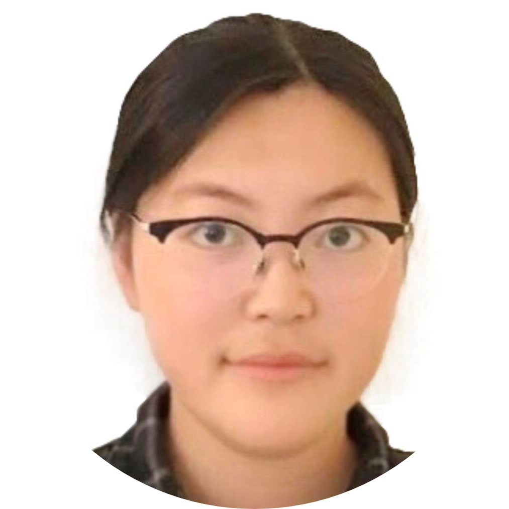

Francis Geng
UC Berkeley, Class of 2023
EECS & Data Science
fgeng (at) berkeley.edu
Hello and welcome! My name is Francis Geng. Feel free to read below for more information about me, or take a look at my work experience, teaching, projects, and coursework.
For a quick summary of all of these, check out my resume or LinkedIn.
Skills
- Languages: Python, Java, SQL, Ruby, HTML/CSS, R
- Libraries: Pandas, scikit-learn, TensorFlow, PyTorch, Numpy, Matplotlib
Coursework
- In Progress (Fall 2021):
- CS 170: Efficient Algorithms and Intractable Problems
- CS 188: Artificial Intelligence
- EECS 126: Probability and Random Processes
- EECS 127: Optimization Models in Engineering
- Completed:
- CS 61A: Structure and Interpretation of Computer Programs (A+)
- CS 61B: Data Structures and Programming Methodology
- CS 70: Discrete Mathematics and Probability Theory
- EECS 16A/B: Designing Information Devices and Systems I/II (A)
- Data 100: Principles & Techniques of Data Science (A+)
- CS 370: Adaptive Instruction Methods in Computer Science (A+)
About Me
Hello! My name is Francis, and I am a EECS and Data Science student at UC Berkeley. (To be continued...)